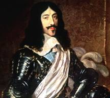
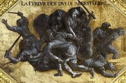
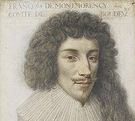
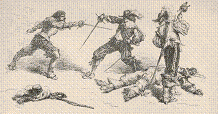
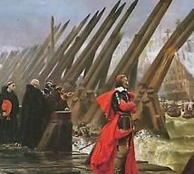
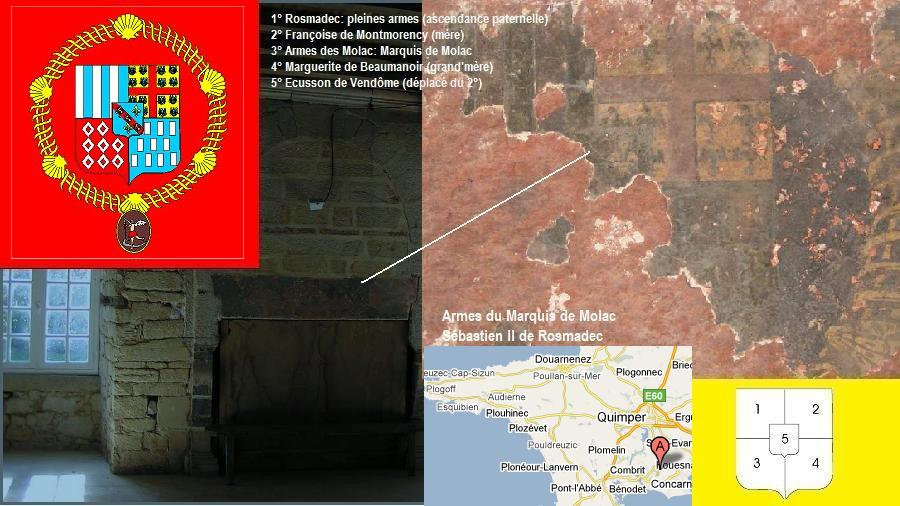

Le Page de Louis XIII
The Page of Louis XIII
Dialecte de Cornouaille
|
- précédée de la traduction publiée en 1843 par Pitre-Chevalier dans la "Revue de l'Armorique" Selon M. Le Rol, le 2ème carnet contient d'autres varientes: "Bodelio" (BOD), pp.196-199, "Pagik Bodinio zo mac'het" (accablé) (PBM), pp. 200-202 et "Ar c'hontez Bodelio" (la comtesse de B.) (ACB) pp. 216-217. Depuis novembre 2018, ce carnet est consultable en ligne. On constate que La Villemarqué a reproduit assez fidèlement dans le poème du Barzhaz, les 3 variantes indiquées-ci dessus: - PBM: strophes 1-38 (la prison, le messager se rend auprès de la belle-soeur, l'exécution) - ACB : strophes 38-42 (l'exécution suite) - BOD: strophes 43-79 (l(exécution fin, l'entrevue avec le roi). Il semble avoir librement composé les strophes 11, 24, 46 à 48, 60, 62 à 63, 65 et 66 et 68, soit l'équivalent de 13 strophes sur 79. Il n'a pa eu recours au carnet n°1, même si celui-ci présente une vingtaine de strophes assez proches des autres variantes. - Sous forme manuscrite : . par Madame de Saint-Prix, retranscrit chez De Penguern t. 92, 9: "Bodeillo", . Par De Penguern, t.III, feuillets 64-68: "Contrechapell" . Par Luzel (nouvelles acquisitions françaises de la BNF 3342, 352 "Contrechapel", collecté à Vieux-Marché. . Par Joseph Ollivier ("Bodeillo", MS 987, p. 133-136, copié sur Mme de Saint-Prix) . Ivon Le Diberder (Cahier 1, p.80, copié sur Ollivier) - Publié dans des recueils: . par Luzel, dans "Gwerzioù 1", p.456-463, "Komt Ar Chapel", (Plouaret, 1844). Une traduction française intitulée "Contrechapel" figure dans les documents de l'enquête Fortoul, t. 2, N° 55, p.784-785. . par Y. Le Diberder: "Ur passagér èl ur marquis" (Chansons populaires bretonnes), Baud. |
 |
- but the French translation appeared in "Revue de l'Armorique" in an article by Pitre-Chevalier. According to M. Le Rol, the second copybook harbours other variants: "Bodelio" (BOD), pp.196-199, "Pagik Bodinio zo mac'het" (PBM), pp. 200-202 and "Ar c'hontez Bodelio" (the Countess Bodelio.) (ACB) pp. 216-217. Since November 2018, this notebook has been available online. It appears that La Villemarqué reproduced fairly faithfully in Barzhaz's poem, the 3 variants indicated above: - PBM: stanzas 1-38 (the prison, the messenger sent to the sister-in-law, the beheading) - ACB: stanzas 38-42 (the beheading continued) - BOD: stanzas 43-79 (l (the end of the beheading, interview with the king). He seems to have composed ex nihilo stanzas 11, 24, 46 to 48, 60, 62 to 63, 65 and 66 and 68, that is to say the equivalent of 13 stanzas out of 79. He did not elaborate on notebook n ° 1, even if about twenty stanzas in it are quite similar to other existing variants. - In handwritten form : . by Madame de Saint-Prix, copied by De Penguern t. 92, 9: "Bodeillo", . by De Penguern, t.III, leaves 64-68, as "Contrechapell" . by Luzel ("New acquisitions of French texts" by the French National Library, 3342, 352, as "Contrechapel", collected at Vieux-Marché. . by Joseph Ollivier ("Bodeillo", MS 987, p. 133-136, copied from Mme de Saint-Prix) . Ivon Le Diberder (Copybook 1, p.80, copied from Ollivier). - Published in printed collections: . by Luzel, in "Gwerzioù 1", "Komt Ar Chapel", (Plouaret, 1844). A French translation titled "Contrechapel" is part of the papers sent in for the Fortoul inquiry, book 2, N° 55, p.784-785. . by Y. Le Diberder: "Ur passagér èl ur marquis" ("Chansons populaires bretonnes"), Baud. |
Mélodie - Tune
(En ré majeur dans le Barzhaz, mais compte tenu du sujet dramatique, l'arrangement proposé est sur le mode mineur.
Autre exemple de chant traditionnel "schizophrène", la complainte sicilienne "Vitti na crozza" ).
| Français | English |
|---|---|
|
1. On a pris le page du roi, Parce qu'il avait enfreint la loi, Rekedak ta la , La ri la ri la ri la . 2. Sourd à la voix de la raison. A Paris on l'a mis en prison. 3. Il n'y voit le jour ni la nuit, Une poignée de paille est son lit. 4. Du pain de seigle pour repas, De l'eau de puits, voilà ce qu'il boit. 5. Et les visites qu'il reçoit, Sont celles des souris et des rats, 6. Les souris et les rats noirs sont Au cachot sa seule distraction. II 7. Par la serrure un jour il a Dit à Penfentenyo tout bas: 8. - Yannick, je n'ai plus ici-bas, D'autre ami sur qui compter, que toi. 9. Va donc au manoir, chez ma sœur, Dis-lui qu'il m'est arrivé malheur, 10. La mort est ce qui m'est promis. Ce sont les ordres du roi Louis. 11. Si je pouvais revoir ma sœur, La revoir consolerait mon cœur. - 12. Ce qu'entendant, Penfentenyo Est parti pour Quimper aussitôt. 13. Près de cent trente lieues il y a De Paris à Bodigneau , je crois. 14. Que le Cornouaillais a franchies En un jour et deux nuits et demie. 15. Or, la salle de Bodigneau Rayonnait de l'éclat des flambeaux; 16. La dame donnait à souper A la noblesse dans son palais. 17. La coupe de madre en sa main Etait pleine d'un excellent vin. 18. - Page de Cornouaille, dis, Quelle affaire te conduit ici, 19. Pâle comme un chardon des bois, Essoufflé comme un cerf aux abois? 20. - Ces nouvelles, j'en ai bien peur, Vont jeter le trouble en votre cœur. 21. Elles vous feront soupirer Et vos yeux elles feront pleurer: 22. Votre frère est en grand danger, Le plus grave qu'on puisse affronter. 23. C'en sera bientôt fait de lui Par les ordres de notre roi Louis. 24. Que vous vouliez venir le voir: Son cœur nourrit encor cet espoir. - 25. En l'entendant parler ainsi, Elle faillit perdre ses esprits. 26. Elle fut si troublée que la Coupe d'entre ses doigts échappa 27. Et que sur la nappe le vin Se répandit, signe de chagrin! 28. Oh, palefreniers, vivement! Douze chevaux! Je pars sur le champ. 29. Qu'à chaque relais j'en crève un! Je veux être à Paris dès demain, 30. Dût-on un par heure en crever, Dès cette nuit je veux arriver.- III 31. Montant sur le premier degré De l'échafaud, le page disait: 32. - Mourir me serait bien égal, N'était si loin du pays natal! 33. Hors la présence de ma sœur De Bretagne, si chère à mon cœur! 34. Elle s'éveillera la nuit Demandant où son frère est parti.- 35. Puis le page du roi disait, En montant sur le second degré: 36. - Vais-je donc mourir sans avoir De nouvelles de mon cher terroir, 37. Ni de nouvelles de ma sœur? Que sait-elle de tous mes malheurs? - 38. Maintenant il est tout en haut, Dessus les planches de l'échafaud: 39. - Le pavé des rues, je l'entends, Résonne: c'est ma sœur et ses gens! 40. Oui, c'est ma sœur qui vient me voir! Au nom du ciel, il vous faut surseoir!- 41. Quand il l'entendit, le prévôt Au pauvre page adressa ces mots: 42. - Avant qu'elle soit arrivée, Votre tête, hélas, sera coupée. 43. La dame en cet instant précis, Demandait aux badauds de Paris: 44. - Pourquoi donc se sont réunis Tant d'hommes et de femmes ici? 45. - C'est un pauvre page que Louis Le traître fait occire aujourd'hui.- 46. Ces mots à peine prononcés, Elle a vu son frère agenouillé. 47. Agenouillé, tête posée Sur le billot, pour être tranchée. 48. Et de s'élancer au galop, Criant - Mon frère ! Halte! Il est trop tôt! 49. Archers, épargnez-lui la mort! Je vous donnerai cent écus d'or; 50. A vous, à titre de denier, Oui, deux cents marcs d'argent de Tréguier! 51. Quand elle aborde l'échafaud, Le chef tranché tombe du billot, 52. Le sang sur son voile gicla Et le rougit du haut jusqu'au bas. IV 53. - Sire le roi, reine, salut! Puisqu'au palais vous êtes venus. 54. Mon frère, quel fut son forfait, Pour que vous l'ayez décapité ? 55. - Un duel sans l'agrément du roi Où le plus beau des pages il tua. 56. - On ne tire pas l'espadon, Sans avoir d'excellentes raisons. 57. - Des raisons, c'est clair, il en eut Chaque assassin en a, tant et plus. 58. - Quoi, nous serions des assassins? Les nobles bretons sont gens de bien! 59. Tout gentilhomme, s'il est droit. Ceux de France, je ne dis pas, 60. Car vous répandez, fils de loup, Le sang dès lors il n'est pas à vous. 61. - Tenez votre langue, madame, Si vous voulez rentrer en Bretagne. 62. - Rester, repartir, peu me chaut! Quand mon frère est mort sur l'échafaud. 63. Dût-il y trouver à redire Ses vraies raisons, le roi doit me dire! 64. Vous voulez savoir mes raisons? Je vais vous répondre, écoutez-donc: 65. Il s'est emporté, s'en est pris Soudain à mon page favori, 66. Tout de suite, ils ont ferraillé. L'autre citait ce mot qu'on connaît, 67. Cette vérité, mot pour mot: «Les Bretons ne sont que des pourceaux». 68. - Belle vérité que voilà, Mais j'en sais une tout autre, moi: 69. «Tout roi de France qu'il est, Louis N'est qu'un railleur dépourvu d'esprit.» 70. Dans peu de temps tu verras bien Que l'on ne nous raille point en vain. 71. Quand aux Bretons j'aurai montré Mon voile tout de sang maculé. 72. Et tu verras si nos herbages Sont bien peuplés de pourceaux sauvages.- V 73. Deux ou trois semaines après, Il vint à Paris un messager ; 74. Venant du pays des Normands, Apportant des messages urgents, 75. Des plis d'un sceau rouge scellés, A remettre au monarque au long nez. 76. Le roi les lit et l'on put voir, Le grand prince rouler des yeux noirs, 77. Aussi noirs que les yeux d'un chat Sauvage qu'un piège captiva. 78. - Malédiction! Qu'ai-je laissé Cette maudite Laie m'échapper? 79. Plus de dix mille écus gâchés, Et pour un seul, dix mille hommes tués!- Traduit par Ch. Souchon (c) 2011 |
1. The King's young page was caught because
|
Cliquer ici pour lire les textes bretons (versions imprimée et manuscrite).
For Breton texts (printed and ms), click here.

|
Résumé
 Cette gwerz conte l'histoire du jeune comte François de Rosmadec , condamné à la décapitation en 1627 pour s'être battu en duel avec un page du Roi.Alertée par son ami Penfentenyo, sa (belle-)sœur se rend de Bodigneau à Paris pour obtenir sa grâce du Roi. Celui-ci justifie son refus en invoquant... al lavar koz, ar wirionez: "N'euz tud e Breizh nemed morc'h-gouez" ce vieux dicton, cette vérité: "Il n'est d'hommes en Bretagne que des pourceaux sauvages" (Ce n'est donc pas d'hier que la Bretagne a des problèmes de porcs). La sœur promet à ce cruel railleur une vengeance, mais on laisse partir "ar wiz"-la Laie-. En représailles a lieu un soulèvement en Normandie qui coute au Roi plus de 10.000 écus et de 10.000 hommes. Faut-il lire "Roc'helled" (les Rochelais) au lieu de "Normaned": le siège de la Rochelle qui coûta très cher au Royaume commença le 12 octobre 1627? Les Rosmadec La famille de Rosmadec jouissait d'un grand crédit auprès du roi Louis XIII. Le chef de la maison, Sébastien, deuxième marquis de Rosmadec, fut marié en mai 1616 à Renée de Kerhoent, l'héroïne de la gwerz ci-dessus. Il fut requis par le roi pour présider en 1621 en l'ordre de la noblesse aux états de la province de Bretagne et offrit au roi un secours extraordinaire de 500.000 livres. L'année suivante, Sébastien de Rosmadec accompagne le Roi en guerre au Bas-Poitou contre Soubise qu'avec cent gentilshommes il parvient à chasser du fort du Blavet et à repousser à la mer. Le marquis fut alors admis à paraître à la cour et à accompagner le Roi lors de son voyage en Bretagne l'an 1626. Malgré le tragique événement relaté par la complainte, Sébastien fut nommé par le roi gouverneur de Quimper en 1634, puis de Dinan en 1643. Le duel  Les faveurs royales dont jouissait Sébastien ne furent pas assez fortes pour arracher des mains du bourreau son jeune frère, le comte des Chapelles, François de Rosmadec (1598 - 1627), condamné à la décapitation pour avoir secondé son cousin maternel, le comte de Luxe, François de Montmorency-Boutteville , lors d'un duel, place Royale, l'actuelle Place des Vosges à Paris, qui coûta la vie à un page de Louis XIII.François de Montmorency (1600 - 1627) était le second fils du vice-amiral de France sous Henri IV, Louis de Montmorency. En 1616, à l'âge de seize ans, il succèda à son frère Henri et devint comte de Luxe et gouverneur de Senlis. Il se distingua aux sièges de Saint-Jean-d'Angély, de Montauban, de Royan et de Montpellier. C'était un habitué des duels et à 24 ans en avait 19 à son "actif": il s'était battu en duel contre le comte de Pontgibaud, avait tué le marquis de Portes en 1625, le comte de Thorigny en 1626, blessé le baron de la Frette en 1627, et s'était s’enfui à Bruxelles pour échapper à la colère de Louis XIII qui ne voulut pas lui pardonner. Furieux, Montmorency jura d’aller se battre en plein jour et en plein Paris alors que Richelieu venait de prendre un édit, le 2 juin 1626, interdisant le duel sous peine de mort. C’est ce qu’il fit le 12 mai 1627, en provoquant en duel Guy d’Harcourt, comte de Beuvron. Leurs seconds, le cousin maternel de Montmorency, François de Rosmadec et le marquis Bussi d'Amboise ainsi que leur écuyer respectif se battirent également entre eux, à l'épée et au poignard. Le combat cessa dès que Bussi fut touché à mort par Rosmadec . Si d’Harcourt put se réfugier en Angleterre, Montmorency et Rosmadec, furent arrêtés alors qu'ils cherchaient à s'enfuir vers les Flandres et, malgré les demandes de grâce de la noblesse, furent décapités, en place de Grève, sur ordre de Richelieu, le 22 juin 1627. Richelieu (dont le frère Henri était mort en duel) écrivit: « Il est question de couper la gorge aux duels ou aux Edits de Votre Majesté.» Source: Wikipedia La dame de Bodigneau (Botignau) Une version de la ballade communiquée à la Villemarqué par Brizeux commence ainsi (extrait publié à partir de 1867): Kont euz a Japel, breur ar varkiz, A zo bet dibennet e Pariz Ablamour d'un tôl diaviz. Le comte des Chapelles, frère du marquis Fut décapité à Paris Pour une imprudence qu'il commit. Cette version "fait honneur de ce dévouement à la belle-sœur du jeune page, à Renée de Kerhoent, dame de Bodigneau " (note de la Villemarqué). Née le 16 juin 1601, celle-ci mourut à Paris le 19 novembre 1642 (selon le site "généalogieonline") et fut inhumée dans la nef de l'église du couvent des Augustins, faubourg Saint-Germain. Une épitaphe assurait que cette "dame possédait des qualités éminentes par-dessus la qualité de son sexe" (site "kerhoant.e-monsite.com"). Le texte du manuscrit de Keransquer semble différent du texte communiqué par Brizeux : il y est bien question d'un "taolig diavis" (geste irréfléchi), mais le "Kont euz a Japel" (Comte des Chapelles) n'y est pas nommé. D'ailleurs les seuls éléments du récit qu'on y trouve sont l'introduction, la chevauchée du messager, la réception de la lettre par la dame de Bodinio et la chute de la coupe. Scène absente du Barzhaz et sans doute emprûntée à la gwerz de La Fontenelle , on y voit la belle-sœur demander que la tête du supplicié lui soit remise sur un plat d'argent. Ce détail était cependant connu de La Villemarqué car il figurait dans le carnet 1, p.121. Même si le début est manquant, il semble bien qu'il s'agisse d'éléments communiqués par Brizeux:
En outre cette ballade lui fait proférer une malédiction qui englobe l'ennemi français et ses propres ancêtres qui n'ont pas su amasser assez de biens pour pouvoir acheter la grâce de son beau-frère. Ce dernier est désigné trois fois par les mots "breur(ik) koant": le narrateur veut-il dire "joli frère" ou "beau-frère", habituellement désigné par le calque français "breur-kaer"? Ici encore, cette variante figure dans le carnet 1, p.34:
La version Luzel La version publiée par Luzel dans le 1er tome de ses "Gwerzioù", où elle est intitulée "Komt ar Chapel", reprend les principaux épisodes que l'on trouve dans la version "Barzhaz": L'introduction précise qu'il a tué le page du roi en présence de ce dernier. Le prisonnier charge sa geolière de remettre au messager de la poste une lettre adressée à son frère le Marquis. A Bodinio, la lettre est remise à la Marquise qui se prépare aussitôt à parcourir les 120 lieues qui séparent son château de la capitale (50 lieues selon le manuscrit de Keransquer!). Le jeune condamné entend l'arrivée d'un carrosse depuis sa prison et la geolière lui apprend qu'une belle dame est venue de Bretagne. C'est la marquise qui va essayer d'acheter à sa cousine la reine la grâce de son beau-frère. Mais l'arrêt de mort est déjà signé. L'exécution aura lieu le lendemain à dix heures. La marquise décide, plutôt que de voir la tête du supplicié exposée sur un plat d'agent, de rentrer chez elle pour chercher de quoi faire un feu d'artifice et mettre le feu au palais royal et à la moitié de la ville. Et, de fait, le lendemain le Marquis est là, avec son armée, prêt à mettre cette menace à exécution. L'homme de loi chargé de présider à la décapitation dit à la Marquise: "Ramenez chez vous votre beau-frère. Je ne me mèle plus de cette affaire", une conclusion qui contredit l'histoire et que Luzel soupçonne d'être empruntée à une autre gwerz... De la même façon, La Villemarqué, dans les notes qui suivent la ballade dans l'édition de 1867, remarque que certains éléments de sa version, tels que le hanap de madre (bois veiné, strophe 17) et le marc d'argent de Tréguier (strophe 50), dont on sait désormais qu'il ne les a pas inventés puiqu'on les rencontre dans le second manuscrit de Keransquer, p. 201 / 114 et 196 respectivement , "accusent une poésie évidemment beaucoup plus ancienne que le 17ème siècle". Peut-être est-ce à l'influence de cette ballade plus ancienne qu'il faut imputer le mystérieux soulèvement en Normandie. La Villemarqué propose une autre explication, ainsi qu'on le verra. La version de Mme de Saint-Prix La version intitulée "Bodeilho", notée dans le manuscrit de Mme de Saint-Prix, dans une écriture autre que la sienne, mis à part les corrections et ajouts , (manuscrit de Lesquivit N°1, folios 59v-62r), nous montre le Comte La Chapelle qui charge sa geôlière d'envoyer un messager à Bodeilho prévenir la Marquise du sort qui attend le frère de son mari. On l'a mis dans un "lit de fer" (gwele houarn) où il attend d'être jugé pour une incartade (taol diaviz) qu'il a commise: Il a passé par le fil de l'épée le meilleur ami du roi avec le "soutien du Marquis Lesombré!" S'agit-il de ce Des Aubrays, qui fut capitaine de mousquétaires dans le Trégor vers 1640 et est l'archétype du Lez-Breizh du Barzhaz ? Elle part en hâte et le soir même les douze clochettes d'or de son carrosse résonnent dans les rues de Paris. Le prisonnier reprend espoir. Sa belle-sœur se rend, pour payer une rançon, auprès du roi et de la reine. Cette dernière lui apprend qu'il est trop tard: le sceau royal a été apposé à l'ordre d'exécution. A partir de là, le récit se brouille: la Marquise s'en prend à la reine qu'elle nomme sa cousine-germaine et lui représente qu'elle-même n'aurait pas même cinq sous à donner pour avoir la vie du Père Mo(r)quet (ar Permoket?), le vrai responsable de la mort imminente de son frère. C'est alors que le Père Moquet est abattu et que le roi rend sa liberté au Comte La Chapelle, lequel repart en grande hâte pour Bodeilho avec sa belle-sœur, loin de Paris où il n'y a que trahison. Selon M. Yvon Rol (Thèse de doctorat rédigée en breton, soutenue le 5 juillet 2013 à l'univerité de Rennes 2, intitulée "La langue des gwerzioù à travers l'étude des manuscrits"), les versions que l'on trouve dans les manuscrits de Penguern, Joseph Ollivier, et Yves Le Diberder, sont copiées sur celle de Mme de Saint-Prix. Le siège de La Rochelle La ballade telle que la présente La Villemarqué complète l'histoire en précisant le motif du duel: une injure à caractère quasiment raciste proférée à l'encontre de gentilshommes bretons. Elle nous apprend aussi que même le monarque se faisait l'écho de ces sarcasmes, moins de cent ans après la promulgation de l'Edit d'union perpétuelle (1532). Elle se sépare de l'histoire, en évoquant une rébellion qui aurait éclaté en représaille de la condamnation. Elle aurait coûté fort cher au royaume, et la nouvelle serait en parvenue au roi depuis la Normandie, trois semaines après l'exécution des deux Bretons. Comme l'indique La Villemarqué, il pourrait s'agir du siège de La Rochelle. Cette ville désirait préserver ses libertés et entretenir directement des relations avec des puissances étrangères, y compris celles qui étaient en froid avec le gouvernement royal, en l'occurrence l'Angleterre qui encourageait la sédition des réformés. Richelieu décida de soumettre cette ville et en entreprit le siège sans reculer devant aucun moyen: il fit édifier une digue isolant la ville de la mer. Après un siège de plus d’une année qui vit disparaître la plus grande partie de sa population, la ville se rendit (1628). Ce fut la fin de l’autonomie politique et militaire des protestants dont Louis XIII confirma cependant la liberté de culte par l’édit d’Alès (1629). Louis XI ou Louis XIII La localisation en Normandie de la rébellion évoquée dans la ballade avait conduit La Villemarqué, qui suivait en cela l'avis de son informateur, le poète Brizeux, à intituler la pièce "Le page de Louis XI" dans l'édition de 1845, où elle fut publiée pour la première fois. Le soulèvement était celui, relaté par le chroniqueur Jean de Troyes , qui eut lieu en 1468, sous le règne du roi Louis XI, à Merville entre Dives et Caen, du fait de Bretons à la solde du Duc François II. Ils s'étaient emparés un an plus tôt de la ville d'Evreux, puis de Bayeux, avoir été enfermés au château de Caen. En marge de la page 197 / 112 du carnet N°2 où est notée la variante BOD de la gwerz , sans doute 1841 ou 1842, La Villemarqué faisait cette remarque: "Le duc de Bretagne François II accusait Louis XI de lui débaucher et d'attirer à la cour ses sujets. (Barante)" . Il se référait à l'ouvrage en 13 volumes , "Histoire des ducs de Bourgogne de la maison de Valois", publié pour la première fois de 1824 à 1826 par l'académicien et Pair de France Prosper de Barante (1782-1866). Dans un mémoire lu au Congrès de l'Association bretonne, à Brest en octobre 1855, l'historien breton Pol de Courcy rectifia la datation de cette ballade dont le sujet principal était, sans nul doute, la décapitation en 1627 de François de Rosmadec. La Villemarqué rectifiera dans l'édition de 1867, sans changer autre chose que le chiffre apposé au nom du roi: Louis XI devient Louis XIII. Il conserve, en particulier, l'"argument" de 1845 dont le caractère anti-français appuyé ne reflète plus le scandale de l'exécution d'un gentilhomme breton antérieurement au rattachement du Duché à la France , mais les sentiments qui animaient le collecteur après 15 ans de règne de Louis-Philippe: "La tradition populaire nous a conservé à ce sujet une anecdote intéressante. Elle prouve que le despotisme des rois de France poursuivait les sentiments nationaux jusqu’au fond du cœur des jeunes nobles bretons de leur cour, fidèles au culte du pays ". L'argument de 1867 se contente de noter que: "dans les altercations entre leurs pages, prenant fait et cause contre les Bretons, lors même que les Français avaient été les agresseurs ... [les rois de France] ne rougissaient pas de jeter dans la balance, pour contre-poids à l'épée du vainqueur, la hache du bourreau." Bien entendu, l'auteur sait désormais que le roi en question est Louis XIII et non Louis XI, "comme le veulent mal à propos presque toutes les versions du chant" et qu'il "pouvait alléguer les ordonnances contre le duel: Dura lex sed lex." L'opinion de Francis Gourvil Dans son "La Villemarqué...", Francis Gourvil souligne, à propos de cette gwerz que l' "archétype [tel qu'on le trouve chez Luzel et de Penguern] ne contient aucune des grossièretés lancées par des Français à la tête des Bretons, et réciproquement, pas plus que les insultes échangées entre le roi et la soeur du page, toutes choses introduites par La Villemarqué." En se reportant au premier manuscrit de Keransquer , on voit que ce document - qu'on n'a pas de raison, à priori, de croire inauthentique - impute à la belle-soeur du page une attitude complexe: - non seulement ses parents qui ne lui ont pas permis d'amasser assez de biens pour obtenir la grâce royale, - mais aussi le roi et la reine qui ont tué son beau-fère, - et les Français, dans une phrase lacunaire qui s'achève par les mots "...gant ar Vretoned" (par/avec les Bretons). Il faudrait donc relativiser l'accusation portée par Gourvil: les vitupérations en question existent, au moins à l'état embryonnaire, dans le premier carnet d'enquête de La Villemarqué. Les changements apportés au texte du carnet 2 L'examen du texte original noté dans le carnet n°2 montre que les soupçons exprimés par Gourvil sont en partie seulement justifiés. La Villemarqué a effectivement modifié le texte de départ pour faire passer un message qui lui est propre. Cependant il n'a rien inventé: Par ailleurs "Paj ti ar Roue " (Page de la maison du roi) était semble-t-il une expression toute faite citée par le même dictionnaire. - Les titres des versions BOD et ACB comportent le nom "Bodelio" . Luzel dans ses "Gwerziou", tome I, p. 458 nous apprend qu'il s'agit sans doute de Bodilio en Pestivien (Côtes du Nord). La Villemarqué a remplacé dans le Barzhaz ce toponyme par "Bodinio", justifié par les données historiques. - Le prénom de Penfentenyo, "iwenig" (Yves) devient "Yannig" (Jean). - La durée du trajet Paris-Bodinio, strophe 14, passe d'une nuit et un jour, à 2 nuits et demie et un jour, ce qui est plus vraisemblable. - Louis XI devient Louis XIII dans l'édition de 1867, strophe 45 et strophe 75, La Villemarqué ajoute un détail de son cru: - Enfin, les pertes occasionnées par le soulèvement en réponse à la décapitation du page sonr évaluées différemment dans le Barzhaz, strophe 79: dix mille écus et dix mille hommes et dans le chant original, p. 199: "plus de douze mille écus" et "cent-mille hommes". Cette double signification du mot "Gall" est signalée par le Père Grégoire à l'article "Françoise" (= 'Française): "Celle qui est de France ou du pays où l'on parle français, à la différence du pays breton. 'Gallez', p. 'Gallezed' " . On peut effectivement penser que c'est à dessein que La Villemarqué a fait disparaître le mot "Goueled" , "Basse" (à moins qu'il ne l'ait pas compris: l'expression "Goueled-Breizh" est infiniment plus rare que "Breizh-Izel" pour désigner la "Basse-Bretagne"). La strophe 59 devient dans le Barzhaz : "Na denjentil gwirion ebet / Ar C'hallaoued ne laran ket. " qu'il traduit, en 1845: "Pas plus qu'aucun gentilhomme loyal; quant aux Français, je ne dis pas." En 1867, il corrige cette formule trop générale en limitant l'anathème aux gentilhommes d'outre-Couesnon: "... quant à ceux de France..." Si bien qu'il est exagéré de parler de pures inventions, comme le fait Gourvill, à propos de ces vitupérations anti-françaises. Le texte d'origine, contrairement à ce qu'il affirme, comporte bien cette note identitaire basse-bretonne qu'un peu trop hâtivement il déclarait factice. - En revanche, à la strophe suivante, le remplacement de "Lapous" , l'Oiseau" qui échappe à l'oiseleur, p.199, par "ar Wiz" , "la Laie", est sans aucun doute intentionnel, puisqu'il permet d'évoquer l'animal au centre du litige, "pemoc'h" , le "porc" qui n'est pas sorti de l'imagination de La Villemarqué, comme le soupçonne Gourvil. Tout au plus peut-on contester que la métaphore disgracieuse visant les Bretons soit un "lavar kozh" , un dicton ancien , comme l'affirme la strophe 67 du Barzhaz. |
La Gwerz de Thomas de Guémadeuc
Il convient de signaler ici l'existence d'une autre gwerz qui relate une aventure assez semblable à celle du malheureux François de Rosmadec. Il s'agit de la complainte que Luzel a publiée sous deux formes différentes dans les "Gwerzioù", tome I (1867), pages 367 et 375, sous les titres "Le seigneur de Rosmadec" et "Rosmadec et le Baron Huet" . Cette dénomination trompeuse provient d'une homonymie approximative entre "Rosmadec" et "Thomas de Guémadeuc" (1586 - 1617) qui est, avec Jacques de Nevet (1587 - 1616, le beau-père de Vincent du Parc, "Marquis de Guérand" et l'un des trois "Monsieur de Névet" possibles), le véritable héros de cette non moins lamentable histoire. Dans l'une des versions (tome 93) recueillies par de Penguern, Jacques de Nevet est appelé "Yvet". En revanche, les versions collectées par Mme de Saint-Prix et la feuille volante recensée sous le n°987 par J. Ollivier rendent aux protagonistes leurs identités véritables: "Baron Nevet hag ar Guimadec".
Le duel qui opposa les deux hommes pour des raisons de préséance aux Etats de Bretagne de 1616 se termina par la mort du premier et par la décapitation du second sur l'ordre du roi Louis XIII, le 27 septembre 1616 en place de Grève. La tête de Guémadeuc fut exposée sur une pique à l'entrée du château de Fougères dont il avait été le gouverneur.
Un problème d'héraldique
Dans la note dont La Villemarqué fait suivre la ballade, il est dit:
"Le fief de Bodigneau passa en 1680 dans la famille de Penfentenyo ou Cheffontaines, originaire du Léon, celle-là même où le beau-frère de la Dame de Bodigneau trouva l'ami qu'il chargea de son message; mais ce dernier n'était ni page du roi, ni Cornouaillais, quoique l'auteur de la ballade le prétende."
Comme il ressort du lien ci-après, le château fut nationalisé en 1793, puis vendu aux Hernio, une longue lignée d'avocats de Quimper. Depuis cette époque il ne reste plus du château original qu'un pavillon d'angle et une partie des communs. Un nouveau château a été construit dans la 2ème moitié du 19ème siècle, à proximité de ces ruines, par la famille Nouët du Tailly.
En janvier 2011, un visiteur du présent site, passionné d'héraldique, M. Michel Mauguin , découvrit sur le manteau de la cheminée du premier étage (du pavillon), les restes d’un écusson peint (cf. montage photo ci-après). Des investigations dignes de Sherlock Holmes (détourage des formes visibles, recherche des restes de couleurs) et le concours de deux amis, M. Pierre Lescot et l'héraldiste, M. Paul-François Broucke, lui ont permis de déterminer avec certitude que le blason peint est celui de Sébastien de Rosmadec, Marquis de Molac, le frère du malheureux Page du roi. M. Broucke s'est appuyé sur une de ses archives, une description des armoiries qui ornent les demeures des Penfentenyo, dont le château de Bodinio.
La ballade Les jeunes hommes de Plouyé" fait état d'un autre Rosmadec, Bertrand, qui fut évêque de Quimper de 1416 à 1446. Le combat des Trente évoque, quant à lui, un ancêtre de la grand'mère du Page, Jean de Beaumanoir.
Quant aux losanges figurant en 3 sur le blason, ce ne sont pas les "macles" des Rohan (cf. illustration Le Clerc de Rohan ) mais ceux des marquis de Molac, le titre dont les Rosmadec usaient le plus souvent. Il est vrai, comme l'écrit M.de Broucke, que les Molac sont "un ramage des Rohan dont ils brisent les armes par changement d'émaux" (une branche de cette famille qui utilise le même symbole en changeant sa couleur).
Pour en savoir plus sur Bodigneau, cliquez ici!

This lament tells the story of young Count Francis of Rosmadec , who was sentenced to death by beheading in 1627 after a duel with a King's page.Alerted by his friend Penfentenyo, his sister (-in-law) left Bodinio for Paris to beg for him the royal pardon. The King, to justify his refusal, quoted ...
al lavar koz, ar wirionez: "N'euz tud e Breiz nemed morc'h-gouez"
this old saying, that's known of all: "Bretons are like pigs in a stall" (the inference: intensive pig breeding was a worry to Brittany very early).
The sister swore to take vengeance upon this cruel mocker, however they let go "ar wiz"-the Sow-.
In retaliation, a rebellion broke out in Normandy which cost the King over 10,000 crowns and 10,000 men.
Maybe we ought to read "Roc'helled" (the "Rochellese") instead of "Normaned" (Normans): the siege of La Rochelle which was a heavy burden to the Kingdom began on 12th October 1627?
The Rosmadec family
The Rosmadec family enjoyed King Louis XIII's confidence. The head of the family, Sebastian second marquess of Rosmadec married in 1616 Renée of Kerhoent, who plays an outstanding part in the ballad above. Sebastian was made by order of the King chief deputy of the gentry at the 1621 session of the States of Brittany and he granted him in return an exceptional aid of 500,000 pounds.
The next year, Sebastian of Rosmadec took part in the raid against Soubise whom he managed, with a hundred noble followers, to expel from Fort Blavet where he had landed. The marquis was then allowed to appear at court and to accompany the king on a trip through Brittany in 1626. In spite of the fateful event mentioned in the ballad, Sebastian was appointed to the king as governor of Quimper in 1634, then of Dinan in 1643.
The duel
The royal benevolence enjoyed by Sebastian was not enough to prevent from beheading his younger brother, the Count of Chapelles, Francis of Rosmadec (1598 - 1627) who had stood second for his cousin, the count of Luxe, Francis of Montmorency-Boutteville , in a duel on the Place Royale, now Place des Vosges, in Paris, that ended with the death of a nobleman, page to king Louis XIII.
Francis of Montmorency (1600 - 1627) was the second son of King Henry IV's Vice-admiral Louis of Montmorency. In 1616 the sixteen year aged Francis succeeded his brother Henry and became count of Luxe and governor of Senlis. He distinguished himself at the sieges of Saint-Jean-d'Angély, Montauban, Royan and Montpellier. He was an inveterated duellist, and, when he was 24, had already fought 19 duels. he had fought against the count of Pontgibaud, had killed the marquis of Portes in 1625, the count of Thorigny in 1626, injured the baron de la Frette in 1627, and escaped to Brussels fleeing from the King's wrath. The latter did not allowed himself to be swayed.
In anger, Montmorency swore that he would fight again overtly, in the middle of Paris, defying Richelieu's edict passed on 2nd June 1626 , forbidding duelling on pain of death.
That's what he did on 12th May 1627, when he challenged the Count of Beuvron, Guy of Harcourt. Their respective seconds, Montmorency's cousin Francis of Rosmadec and Marquis Bussy of Amboise, each of them accompanied by a squire joined them in the sword-and-dagger duel that ceased when Bussy was stabbed to death by Rosmadec .
Harcourt could escape to England but Montmorency and Rosmadec were arrested on their way to Flanders. In spite of the endeavours of their noble friends to save their lives, Richelieu insisted that they should be beheaded, on 22nd June 1627, on the Place de Grève. He wrote to the king "Duelling or your Majesty's Edict: either of them shall have its throat cut".
Source: Wikipedia
The Lady of Bodinio (Botignau)
A variant of the lament sent by the poet Briseux to La Villemarqué reads (excerpt published as from 1867):
Kont euz a Japel, breur ar varkiz,
A zo bet dibennet e Pariz
Ablamour d'un tôl diaviz.
Count des Chapelles, brother of the marquess
Was beheaded at Paris
Due to an ill-considered offence.
The same version "credits with this self-denying devotion the young page's sister-in-law, Renée of Kerhoent, the lady of Bodigneau Manor " (as stated in La Villemarqué's note). She died in Paris, on 19th November 1634 and is buried in the church of the Faubourg Saint Germain Convent of Augustines, with an epitaph ensuring that "this lady owned eminent merits far above those usually found in women."
The text in the Keransquer MS seems to be different from the ballad contributed by Brizeux : if it does mention a "taolig diavis" (a thoughtless prank), the "Kont euz a Japel" (Count des Chapelles) appears nowhere. Besides the only episode of the narrative it contains are the introduction, the messenger's long ride, the receipt of the letter by the lady of Bodinio and the fall of the goblet.
A scene, missing from the Barzhaz, and very likely borrowed from the La Fontenelle lament, depicts the sister-in-law asking for the condemned young man's head to be handed out to her on a silver salver.
This detail was however known to La Villemarqué because it appears in notebook 1, p.121. Even if the beginning of the song is missing, it seems that these are elements communicated by Brizeux:
|
Mar dibennfec'h-c'hwi ma breurig koant,
Lakait e benn din war ur plad arc'hant. Me he gaso ganin barzh ma c'hambr Me a zello dezhañ p'am-bo c'hoant .. |
If you behead my brother-in-law
Place his head on a silver dish. I will take it with me to my room I'll look at it whenever I choose. |
Furthermore the MS version puts in her mouth curses encompassing the French foe and her own ancestors who failed to gather enough wealth to buy her brother-in-law's pardon. The latter is referred to repeatedly as "breur(ik) koant": does it mean "handsome brother" or "brother-in-law", which is usually rendered by the French calque "breur-kaer"?
Again, this variant appears in booklet 1, p.34:
|
- Mil mallozh deoc'h en ho bezioù!
Mallozh deoc'h, tadoù ha mammoù! N'ho-poa ket awalc'h a vadoù E-barzh ar maner Bodinio. Mallozh deoc'h, roue ha rouanezl, Ho-peus lazhet ma breurig kaez! Mil mallozh deoc'h-c'hwi, Gallaoued! ... gant ar Vretoned! |
- A thousand curses on you in your graves!
Curse on you, fathers and mothers!
Who had not collected enough goods At the Bodinio mansion. Curse on you, king and queen, Who killed my brother-in-law! Curse on you, the French! ... by the Bretons! |
The Luzel version
The version published by Luzel in the 1st book of his "Gwerzioù", where it is titled "Komt ar Chapel", includes all the main episodes that are found in the "Barzhaz" version: The introduction stresses that the page was killed in presence of the king. The prisoner asks the gaoler to give the mail messenger a letter addressed to his brother the marquess. At Bodinio, the letter is handed out to the marchioness who immediately prepares for the 120 league journey from her Bodinio manor to Paris (50 leagues only in the Keransquer MS!). The young man perceives from his gaol the screech of the wheels of a carriage, and his gaoler informs him that a stately lady has come from Brittanyl. It is the marchioness who came to make a desperate attempt to buy from her cousin, the queen, her brother-in-law's pardon. But the sentence of death is already signed and the beheading is due on the next day at ten. The marchioness decides, instead of waiting till the condemned man's head be placed on a silver salver, to hurry back home and fetch the props for a firework that will set on fire the king's palace and half of his town.
And really, the next day the Marquess is here, with an army, ready to carry out this threat. The magistrate in charge of the beheading tells to the marchioness: "Take your brother-in-law with you! I just want to keep out of it", a conclusion which doesn't conform with history, and could, in Luzel's opinion, be borrowed from another ballad ...
Similarily, La Villemarqué, in his "notes" following the gwerz in the 1867 edition, remarks that some features in his version, like the marble goblet (stanza 17) and the silver mark of Tréguier (stanza 50), which, as we now know, he did not invent, since they are found in the second manuscript of Keransquer, on pages 201/114 and 196 respectively, "hint at a piece of poetry dating to much further back than the 17th century". Maybe, too, it is to the influence of this more ancient ballad, that the inclusion of the mysterious uprising in Normandy should be ascribed. For it, however, La Villemarqué suggests another explanation.
The Mme de Saint Prix version
The version, titled "Bodeilho" on the Mme de Saint-Prix MS, is written by another hand as hers but for a few emendations and additions: (Lesquivit MS #1, leaves 59v-62r). Comte La Chapelle instructs his lady-gaoler to send a messenger to Bodeilho so as to inform the Marchioness of the fate awaiting her husband's brother. He has been caged in an "iron closed bed" (gwele houarn) in wait of the sentence to be passed on a thoughtless offence (taol diaviz) he committed: he stabbed in a duel the King's best friend with the support of Marquis Lesombré!" Is the latter the Des Aubrays, a captain of musketeers in Trégor around 1640, who was the archetype for the Lez-Breizh in the Barzhaz ?
She hurries off and, in the same evening, the twelve gold bells on the harness of her carriage horses jingle along the streets of Paris. The prisoner takes heart once more. His sister-in-law repairs with a ransom to the king and queen. The queen tells her that she comes too late: the King's seal is already affixed to the sentence of death.
From now on, the narrative becomes confusing: the Marchioness tells off the Queen whom she names her cousin and lets her know that it would not even cost her five shillings to have someone kill the Rev. Moquet (Père Mo(r)quet, "ar Permoket" ?), whom she considers liable for his brother's oncoming death. And really, the Rev. Moquet is shot dead and the king sets free Count La Chapelle, who immediately speeds back to Bodeilho with his sister-in-law, far away from Paris and its treacheries.
As stated by M. Yvon Rol (in his doctoral thesis in Breton language, presented on 5th July 2013 at Rennes 2 University, titled "The language used in 'gwerzioù' as recorded in MSs"), the versions of the gwerz at hand found in the manuscripts of de Penguern, Joseph Ollivier and Yves Le Diberder are mere copies of the Mme de Saint-Prix MS version.
The siege of La Rochelle

The ballad provides us with the motive of the famous duel, to wit a racist insult uttered against Breton noblemen. It also informs us that these sarcasms were echoed by the king less than a century after the Edict of perpetual Union (1532).It diverges from history in referring to a rebellion provoked by way of retaliation that imposed a heavy tribute in gold and men on the kingdom. The news was allegedly forwarded to the king from Normandy, three weeks after the beheading of the two Bretons.
As stated by La Villemarqué the siege of La Rochelle could qualify for it. This town claimed to assert its franchises and to entertain direct relations to foreign powers, including those who were at loggerheads with the royal government, in the present case England which supported the Huguenot uprisings.
Richelieu decided that the stronghold would be subdued and laid siege to it and did not shrink from the expense. A seawall was built for blocking the channel leading to the harbour. La Rochelle that had resisted for over a year and lost the greater part of its inhabitants surrendered in 1628. By the terms of the Peace of Alès the Huguenots lost their political and military rights but retained the religious freedom granted by the Edict of Nantes.
Louis XI or Louis XIII
That the ballad locates the uprising in Normandy had prompted La Villemarqué, who modeled his opinion on that of his contributor, the poet Brizeux, to title the ballad "The Page of Louis XI", in the 1845 edition of the "Barzhaz" where it was first published. The uprising was the rebellion, recorded by the chronicler Jean de Troyes , that took place in 1468, in the reign of Louis XI, at Merville, between Dives and Caen, when Bretons, on behalf of the Duke of Brittany, Francis II, attacked this town, after they had, a year earlier, captured Evreux and Bayeux, though they had been for a short time imprisoned in Caen castle.
On the margin of page 197/112 of notebook N ° 2 where the BOD variant of the gwerz is noted, probably 1841 or 1842, La Villemarqué jotted this hint
"The Duke of Brittany François II accused Louis XI of luring away his subjects to his own court. (Barante)" .
He thus referred to the 13-volume work, "History of the Dukes from the House of Valois-Burgundy", first published from 1824 to 1826 by the Academician and Peer of France Prosper de Barante (1782-1866).
In a report to the Congress of the Breton Association held in Rennes in October 1855, the Breton historian Pol de Courcy, corrected the date ascribed to this ballad whose main subject matter was, to be sure, the beheading of François de Rosmadec in 1627. La Villemarqué "amended" his text in the 1867 edition by merely changing the number affixed to the king's name: Louis XIII instead of Louis XI.
In particular he kept unchanged the "argument" inherited from the 1845 edition, whose clearly anti-French character was attuned to the scandalous execution of a Breton nobleman prior to the Act uniting the Duchy with France . Now it echoed the collector's frame of mind in the 15th year of the reign of King Louis-Philippe:
Former text:
The 1867 argument more soberly states:
"In disputes between their pages, [the kings of France] took sides against the Bretons, even when they had been attacked by the French ... They were not ashamed of tipping with the headsman's axe the scales that the winner's sword had thrown off balance." Of course, the author is now aware that the king referred to is Louis XIII, not Louis XI, "as wrongly stated in nearly all versions of the song" . The king could "put forward his edicts prohibiting duels: Dura lex sed lex."
Francis Gourvil's opinion
In his "La Villemarqué...", Francis Gourvil stresses that:
"the archetype [of this ballad, found in Luzel's books and de Penguern's MS] contains none of the coarse expressions allegedly used by French against Bretons and vice versa, or exchanged by the king and the page's sister. They were evidently invented by La Villemarqué."
When reporting to the first Keransquer MS , it appears that this record, - which we have no reason to consider a fraud - imputes to the page's sister-in-law a complex attitude:
- not only on her parents Who did not heap up enough wealth to obtain the royal pardon,
- but also on the king and queen who ordered her brother's death,
- and on the French in general, in an incomplete sentence that ends up with the words ""...gant ar Vretoned" (by/with the Bretons).
So that we are tempted to temper Gourvil's criticism: the suspicious vituperations do exist, at least in embryo, in La Villemarqué's first collecting books.
Changes made to the text of notebook 2
Perusing the original text recorded in copybook n° 2 shows that only part of Francis Gourvil's doubtful views are proved right La Villemarqué did really alter the original text to convey a message of his own. However, he didn't invent anything:
Besides "Paj ti ar Roue " (Page of the king's house) was apparently a ready-made expression quoted by said dictionary.
- The titles of the BOD and ACB versions feature the placename "Bodelio" . Luzel in his "Gwerziou", volume I, p. 458 states that it undoubtedly refers to Bodilio near Pestivien ("département" Côtes d'Armor). La Villemarqué replaced this toponym in his Barzhaz by "Bodinio", on account of historical data.
- Earl Penfentenyo's first name , "Iwenig" (Yves) becomes "Yannig" (John).
- The Paris-to-Bodinio coach journey time , in stanza 14, grows from one night and one day, to two and a half nights and one day, which sounds more likely.
- Louis XI becomes Louis XIII in the 1867 Barzhaz edition, in stanzas 45 and 75, La Villemarqué adds a detail of his own:
- Finally, the costs and casualties caused by the uprising in response to the page's beheading are assessed differently in the Barzhaz, stanza 79: "ten thousand crowns and ten thousand men" on the one hand, and in the original song, p. 199: "more than twelve thousand crowns and one hundred thousand men" , on the other hand.
This double meaning of the word "Gall" is mentioned by Father Grégoire in connection with the dictionary item "Française" (= 'French woman'): "The one who is either from France or from the part of Britany where French is spoken, unlike in Lower Brittany. 'Gallez', plural. 'Gallezed' " .
One may indeed assume that it is on purpose that La Villemarqué dismissed the word "Goueled", "Lower", unless he did not understand it, since the expression "Goueled-Breizh" is by far less usual than "Breizh-Izel" for "Lower Brittany", i.e. "Breton-speaking Brittany". Stanza 59 becomes in the Barzhaz: "Na denjentil gwirion ebet / Ar C'hallaoued ne laran ket. " which he translated, in 1845: "No more than any loyal nobtleman. But I wouldn't say so much about the French."
In 1867, he corrected this too comprehensive wording by limiting the anathema to the nobility outside Brittany: "... about those [the noblemen] of France ..."
So that it is exaggerated to speak of mere inventions, as Gourvill does, in connection with these anti-French vituperations. The original text, contrary to what Gourvil asserts, does contain this Low-Breton identity note that a little too hastily he declared to be a forgery.
- On the other hand, in the following stanza, the replacement of "Lapous" , "the Bird "which escapes the bird catcher, p.199, by "ar Wiz" , "the Wild Sow", was undoubtedly made on purpose, so as to make it possible to evoke the "animal of discord", "ar pemoc'h" , the "pig" which did not come out of La Villemarqué's imagination, as Gourvil suspects. However we may concede that the unsightly metaphor aimed at the Bretons was perhaps not a "lavar kozh" , an "old saying", as stated in stanza 67 of the Barzhaz poem.
It should not be omitted to mention that there is another gwerz recording a roughly similar adventure, that of the unfortunate François de Rosmadec. It is a lament which Luzel published in two different versions in the first book of his "Gwerzioù", (1867), starting from pages 367 and 375, under the titles "the Lord Rosmadec" and "Rosmadec and Baron Huet" . This confusing appellation is due to a vague homonymy between "Rosmadec" and "Thomas de Guémadeuc" (1586 - 1617) who was, with Jacques de Nevet (1587 - 1616, the father-in-law to Vincent du Parc, "Marquis de Guérand" and one of the three possible "Monsieur de Névets" ), one of the real protagonists in this pitiable story. In one of the extant versions (book 93) gathered by de Penguern, Jacques de Nevet is named "Yvet". However, the versions collected by Mme de Saint-Prix and the broadside registered under # 987 by J. Ollivier restore the protagonists' genuine identities: "Baron Nevet hag ar Guimadec".
The duel that the two fought because both of them claimed precedence over the other when the States of Brittany convened in 1616, resulted in the death of the former and the beheading of the latter, ordered by king Louis XIII, on 27th September 1616, on the Place de Grève. His head was spiked on a rod at the gate of Fougères Castle of which Guémadeuc was governor.
A bit of heraldry
In a note added to the ballad, La Villemarqué writes:
"The Bodinio estate went over to the local family Penfentenyo, alias Cheffontaines, from which stemmed the friend of the lady's brother-in-law who conveyed for him a message. But the latter was neither King's page nor a Cornouailles scion, in spite of the bard's allegations."
As stated on the page linked hereafter, Bodinio Manor was forfeited to the state in 1793 and sold to the Hernios, an old family of Quimper solicitors. Since then only remains of the old edifice are left: a corner wing and part of the outhouses. A new manor was erected not far from the dilapidated one, by a new owner, the family Nouët du Tailly, late in the 19th century.
In January 2011, a visitor to the present site, keenly interested in heraldry, M. Michel Mauguin , noticed on a mantelpiece on the first floor of the old manor, the marks of a painted escutcheon (see picture below). From the precise sleuth investigations (outlining visible shapes, analysing traces of colours) led by M. Mauguin and two friends of his, M. Pierre Lescot and M. Paul-François Broucke, officer of arms, it may be inferred with certainty that the coat of arms belongs to Sebastian of Rosmadec, Marquess of Molac and brother of the unfortunate King's page. M. Broucke collated the remnants photographed by his friend with a ms out of his own archives, a list of the coats of arms to be found in the mansions owned by the Penfentenyo family, including Bodinio Manor.
The ballad The young Men of Plouyé" refers to another Rosmadec, Bertrand, who was Bishop of Quimper between 1416 and 1466. The Combat of the Thirty mentions, on the other hand, a forefather of the Page's grandmother, John of Beaumanoir. The diamonds on the left bottom field of the shield should not be mistaken for the Rohan arms (see picture to The Clerk of Rohan ): they are the token of the Molac marquisate owned by the Rosmadecs. In fact, as stated by M. Broucke in the special language of his calling, "the Molacs are a branch of the Rohans, whose arms they use with modified tinctures".
To know more about Bodinio Manor: click here!
.
